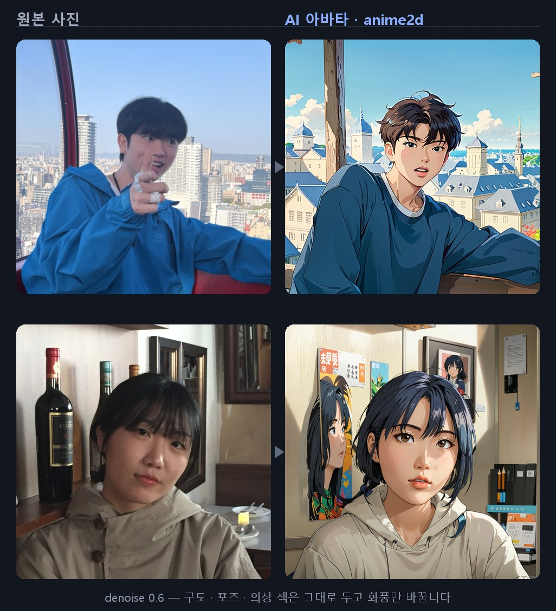
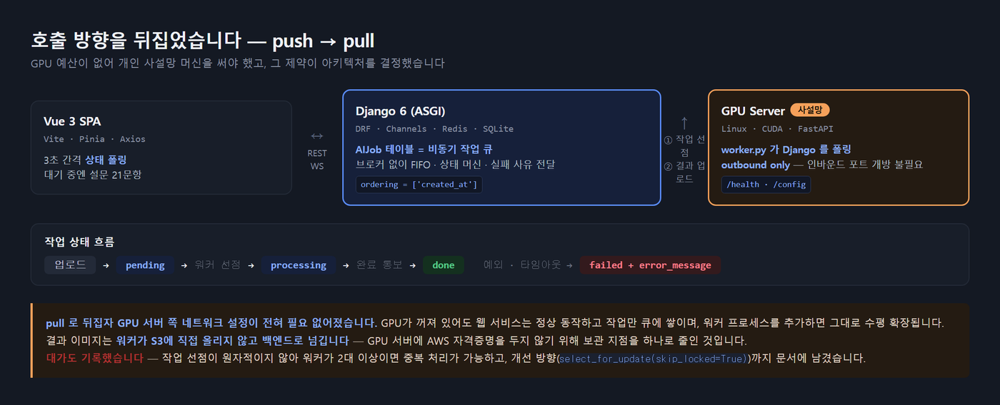
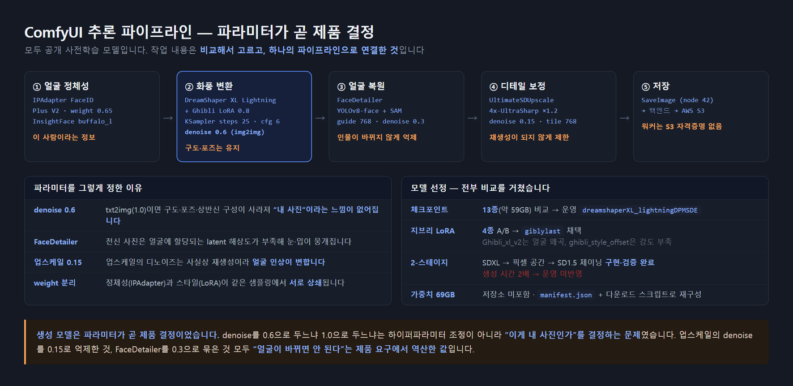

외모나 스펙이 아니라 성향으로 사람을 연결하는 소개팅 서비스입니다.
사용자는 넷플릭스 vs 유튜브, 아침형 vs 저녁형 같은 A/B 질문 21개에 답하고,
서버는 질문별 가중치와 성향 유형을 반영해 0~100점의 궁합 점수를 계산해 상대를 추천합니다.
여기에 블라인드를 실제로 구현하기 위해, 얼굴 사진을 그대로 노출하지 않고 업로드한 사진을 AI 스타일 아바타로 변환해 프로필로 사용합니다. 이 아바타 생성을 위해 별도의 Linux GPU 추론 서버를 구축했습니다.

denoise 0.6 으로 부분만 디노이즈해 "이게 내 사진"이라는 감각을 유지하면서 화풍만 바꿉니다.
denoise 1.0(txt2img)이면 완전히 다른 사람이 나옵니다.2인 팀에서 백엔드 · AI/GPU 파이프라인 · 통합을 전담했습니다. 팀원 1명이 Frontend UI를 맡았고, 프론트–백엔드 API 계약과 폴링 로직 설계는 본인이 했습니다.
| 파트 | 담당 |
|---|---|
Backend (backend/) | 본인 전량 |
AI / GPU 서버 (ai/) | 본인 전량 |
| 프론트–백엔드 연동 | 본인 |
| Frontend UI | 팀원 1명 |
이미지 1장 생성에 수십 초가 걸리므로 Django 요청–응답 안에서 처리할 수 없고, 웹 서버에 CUDA와 모델 수십 GB를 올릴 수도 없었습니다. GPU 예산이 없어 개인 사설망 머신을 써야 했기 때문에, push 방식은 고정 IP나 포트포워딩 없이는 성립하지 않았습니다.

| push (Django → GPU) | pull (GPU → Django) ← 채택 | |
|---|---|---|
| 응답 지연 | HTTP 타임아웃 발생 | 즉시 job_id 반환, 결과는 비동기 |
| 네트워크 | GPU 서버에 인바운드 포트 개방 필요 | outbound only — 사설망·유동 IP에서도 동작 |
| 장애 내성 | GPU 다운 시 요청 유실 | 작업이 DB에 pending 으로 잔존 |
| 확장 | 로드밸런서 필요 | 워커 프로세스 추가만으로 확장 |
브로커(Celery + RabbitMQ)를 추가하지 않고 기존 DB 테이블을 큐로 사용한 것은,
5주 일정에서 운영 복잡도를 늘리지 않기 위한 의도적 선택입니다.
FIFO(ordering = ['created_at']) · 상태 머신 · 실패 사유 전달이라는 당시 요구는 테이블 하나로 충족됐습니다.
filter().first() → save()) 워커가 2대 이상이면 중복 처리가 가능합니다.
개선 방향(select_for_update(skip_locked=True))까지 문서에 적어두었습니다.
| # | 메서드 | 엔드포인트 | 내용 |
|---|---|---|---|
| ① | GET | /ai/next-job/ | 대기 작업 1건 선점 → 즉시 processing 전환 |
| ② | POST | /ai/complete-upload/ | multipart로 결과 전송 → Django가 S3 업로드 |
| ②' | POST | /ai/complete/ | 실패 통보 (error_message 기록) |
비동기로 바꿔도 사용자는 결국 기다립니다. 그래서 대기 구간에, 어차피 반드시 거쳐야 하는 절차를 겹쳐 배치했습니다.
이미지가 GPU에서 생성되는 동안 사용자는 매칭 설문 21문항을 풉니다.
설문은 서비스 이용에 필수인 단계이므로 체감 대기 시간이 사실상 0이 됩니다.
프론트는 3초 간격으로 /ai/status/{job_id}/ 를 폴링하고,
다음 화면에서도 이어서 폴링해 늦게 완료된 이미지를 회수합니다.
여기에 폴백 타임아웃을 넣어, GPU 워커가 꺼져 있는 환경(팀원 로컬, 발표 시연)에서도 약 10.8초 후 다음 화면으로 진행되게 했습니다. AI 서버 가동 여부와 무관하게 전체 플로우 시연이 가능합니다.
models/manifest.json + 다운로드 스크립트로 환경을 재구성하게 했습니다.

LoadImage(원본)
├─ IPAdapterUnifiedLoaderFaceID FACEID PLUS V2, lora_strength 0.85, provider CUDA
└─ VAEEncode
▼
CheckpointLoaderSimple dreamshaperXL_lightningDPMSDE (SDXL Lightning)
→ LoraLoader giblylast.safetensors 0.8 / 0.8
→ IPAdapterFaceID weight 0.65, linear, concat, embeds_scaling "V only"
→ KSampler steps 25, cfg 6, dpmpp_2m_sde / karras, denoise 0.6 ← img2img
→ VAEDecode
→ FaceDetailer face_yolov8m + SAM(vit_b), guide 768, denoise 0.3 ← 얼굴 복원
→ UltimateSDUpscale 4x-UltraSharp, ×1.2, denoise 0.15, tile 768 ← 디테일 보정
→ SaveImage (node 42)| 결정 | 근거 |
|---|---|
| txt2img 대신 img2img (denoise 0.6) | txt2img는 원본의 구도·포즈·상반신 구성이 사라져 "내 사진"이라는 느낌이 없어집니다. 구도는 유지하고 화풍만 바꾸기 위해 부분 디노이즈를 선택했습니다 |
| 베이스를 Juggernaut-XL v9 → DreamShaper XL Lightning | Juggernaut는 정체성 유지에 유리했으나 생성 시간이 길었습니다. 사용자 대기 시간을 줄이기 위해 저스텝 계열로 교체했습니다 |
| IPAdapter weight와 LoRA weight를 분리 튜닝 | 정체성(IPAdapter)과 스타일(LoRA)이 같은 샘플링에서 서로 상쇄됩니다. 스타일마다 균형점이 달라 개별 조정했습니다 |
| IPAdapter provider를 CPU → CUDA | 초기 CPU 설정에서 InsightFace 임베딩 추출이 병목이었습니다 |
| FaceDetailer 추가 (denoise 0.3) | 전신·상반신 사진은 얼굴에 할당되는 latent 해상도가 부족해 눈·입이 뭉개집니다 → 얼굴만 crop해 고해상도로 재생성한 뒤 SAM 마스크로 합성. 재생성 denoise를 0.3으로 억제해 인물이 바뀌는 것을 방지 |
| 업스케일러를 ×1.2 / denoise 0.15 로 제한 | 업스케일의 디노이즈는 사실상 재생성이라 얼굴 인상이 변합니다.
역할을 "디테일 보정"으로 한정하고 타일 경계는 mask_blur 8 · tile_padding 32 로 처리 |
네거티브에 photorealistic, 3d, CGI |
실사로 회귀하는 현상을 억제했습니다.
old, beard, mustache, closed eyes 로 프로필에 부적합한 변형을 차단 |
dreamshaperXL_lightningDPMSDEgiblylast 채택
Ghibli_xl_v2 — 스타일 강도는 높으나 얼굴 왜곡 발생ghibli_style_offset — 변환 강도 부족IP-Adapter FaceID Plus V2 (SDXL) + InsightFace buffalo_lface_yolov8m.pt + sam_vit_b / 업스케일 — 4x-UltraSharp[Stage 1] SDXL dreamshaperXL_lightning + IPAdapterFaceID(0.7)
steps 30, cfg 5, denoise 0.35 → FaceDetailer → Upscale ×1.2
→ 얼굴 정체성 확립
│ VAEDecode (픽셀 공간 경유)
▼
[Stage 2] SD1.5 meinamix_v12Final + LoRA thickline_fp16(0.6)
VAEEncode → steps 25, cfg 7, denoise 0.45
→ 화풍 확립
SDXL은 IPAdapter FaceID 지원으로 얼굴 정체성 보존이 강하지만,
2D 애니 화풍 LoRA 생태계는 SD1.5가 훨씬 풍부합니다.
하나의 그래프로 두 요구를 동시에 만족시킬 수 없어 역할을 분리했고,
아키텍처가 달라 latent를 직접 넘길 수 없으므로
VAEDecode → VAEEncode 로 픽셀 공간을 경유해 연결했습니다.
workflows/experimental/ 에 보존했습니다.
ComfyUI는 동일한 prompt 그래프를 history 캐시로 판단해 이전 결과를 그대로 반환합니다. 워크플로우 JSON에 저장된 seed를 그대로 쓰면 모든 사용자가 같은 이미지를 받습니다.
for node in workflow.values():
if "seed" in node.get("inputs", {}):
node["inputs"]["seed"] = random.randint(1, 2**32 - 1)특정 노드가 아니라 그래프 전체를 순회해 모든 seed 노드를 랜덤화했습니다. 그래프에는 KSampler · FaceDetailer · UltimateSDUpscale 세 곳에 seed가 있어, 하나만 바꾸면 캐시가 계속 걸립니다.
성별에 따라 프롬프트에 1girl / 1boy 를 덧붙이는 로직에서,
초기 구현은 gender 기본값을 'M' 으로 뒀습니다.
백엔드가 gender를 내려주지 않으면 모든 사용자에게 1boy 가 붙는 문제가 있었습니다.
if node_id not in workflow or gender not in ("M", "F"):
returnGENERATE_TIMEOUT(기본 600초) 초과 시 TimeoutErrorstatus_str == "error" 를 반환하면 즉시 예외로 전환except Exception 으로 받아 실패를 통보 → job이 processing 에 방치되지 않음ERROR_BACKOFF(5초) 후 재시도해 루프가 죽지 않게 처리단순 일치율이 아니라 질문의 성격에 따라 점수 부호를 뒤집어 궁합을 계산합니다.
same = (a_answers[qid] == b_answers[qid])
base_sim = 1.0 if same else 0.0
if q.match_type == 'complement':
sim = 1.0 - base_sim # 다를수록 좋은 질문은 점수를 반전
else:
sim = base_sim
weight = q.weight
if both_complement and q.match_type == 'complement':
weight *= 1.5 # 양쪽 모두 '다른 사람' 선호 → 보완 질문 증폭
return round(match_score / total_weight * 100, 1) # 0~100 정규화아침형 vs 저녁형 은 생활 패턴이라 similar, 1.2,
전화 vs 카톡·게임 vs 운동 은 보완되는 편이 낫다고 판단해 complement부먹 vs 찍먹 0.5, 붕어빵 머리 vs 꼬리 0.3.
매칭 정확도를 해치지 않으면서 설문 이탈률을 낮추는 장치입니다
브라우저 WebSocket API는 커스텀 헤더를 지정할 수 없어 REST와 같은 Authorization: Bearer 방식을 쓸 수 없었습니다.
Channels BaseMiddleware 를 상속해
쿼리스트링의 JWT를 검증하고 scope['user'] 에 주입하는 미들웨어를 구현했습니다.
if self.user.is_anonymous: await self.close() # ① 익명 차단
if not await self.is_participant(): await self.close() # ② 채팅방 당사자 + ③ 결제 완료
is_participant() 는 당사자 여부와 함께 match.is_chat_open(양측 결제 완료)까지 검증합니다.
결제하지 않은 사용자가 REST를 우회해 소켓으로 접속하는 경로를 막았습니다.
동기 ORM 호출은 database_sync_to_async 로 래핑했습니다.
결제는 PortOne을 통해 카카오페이로 받습니다.
클라이언트의 "결제 성공" 신호를 신뢰하지 않고, 서버가 토큰을 발급받아
api.iamport.kr/payments/{imp_uid} 로 실제 상태를 재조회합니다.
imp_uid 에 unique 제약 + get_or_create 로 중복 반영을 막았습니다.
양측이 모두 결제해야 is_chat_open=True 가 됩니다.
한쪽만 관심 있는 매칭을 걸러내 "진정성 있는 만남"을 만들려는 제품 의도이자, 동시에 인가 조건이기도 합니다.
# 추천 목록의 N+1 제거 — 후보 ID를 모아 한 번에 조회
ai_jobs = AIJob.objects.filter(user_id__in=candidate_ids, status='done').order_by('-created_at')
question_cache = {q.id: q for q in Question.objects.all()} # 유사도 루프 내내 재사용설계 당시의 판단과 그 대가를 함께 기록했습니다.
| 한계 | 원인 | 개선 방향 |
|---|---|---|
| 작업 선점이 비원자적 → 워커 2대 이상이면 중복 처리 가능 | 단일 워커 전제 | select_for_update(skip_locked=True), 또는 Celery + Redis 브로커 |
Django 워커 엔드포인트가 AllowAny | 5주 일정상 후순위 | 워커는 이미 X-Worker-Token 전송 중 — 백엔드 측 검증 추가만 남음 |
백엔드가 gender 를 내려주지 않아 성별 프롬프트 보강이 비활성 | 워커 계약이 나중에 확장됨 | NextJobAPIView 응답에 user.gender 추가 |
pixar·zepeto 는 선택지만 있고 전용 워크플로우 미구현 | 시간 부족 | 워크플로우 추가 (현재는 기본 스타일로 대체되며 로그로 남김) |
| 유저·워커 양쪽 폴링으로 불필요한 요청 발생 | 구현 단순성 우선 | 이미 Channels/Redis가 있으므로 WebSocket 푸시 또는 SSE로 전환 |
워커가 처리 중 죽으면 job이 processing 에 잔류 | 워커 측 타임아웃만 구현 | 백엔드에 updated_at 기반 stale job 재큐잉 |
| 결제 검증에 시연용 폴백이 남아 있음, 금액도 하드코딩 | 발표 중 결제 API 실패로 플로우가 끊기는 것을 막기 위한 임시 조치 | 폴백 제거, PortOne 응답 amount 를 서버 기준가와 대조 |
| 결과 이미지를 presigned가 아닌 공개 URL로 내려줌 | 설계 누락 | 자격증명 보관 지점은 하나로 줄였는데 결과물 접근 제어는 버킷 설정에만 의존했습니다. 지금이라면 만료 시간을 둔 presigned URL을 쓰겠습니다 |
SQLite 단일 인스턴스, 개발 설정(ALLOWED_HOSTS=["*"]) | 개발·시연 단계 | PostgreSQL 전환, 배포 설정 분리 |
| 생성 이미지의 톤이 입력 사진마다 제각각 | 색상 팔레트를 고정하지 않음 | 서비스 팔레트를 정해 프롬프트·LoRA에 반영 — 프로필이 나란히 놓였을 때 컨셉이 일관됩니다 |
GPU 예산이 없어 사설망 머신을 써야 했고, 그 제약 때문에 호출 방향을 뒤집었습니다. 결과적으로 얻은 장애 내성과 수평 확장성은 처음부터 의도한 것이 아니라 제약을 정면으로 받아들인 데서 나왔습니다. "이상적인 구조"가 아니라 "지금 조건에서 성립하는 구조" 를 먼저 찾는 편이 낫다는 것을 배웠습니다.
denoise를 0.6으로 두느냐 1.0으로 두느냐는 하이퍼파라미터 조정이 아니라 "이게 내 사진인가"를 결정하는 문제였습니다. 업스케일의 denoise를 0.15로 억제한 것, FaceDetailer를 0.3으로 묶은 것 모두 "얼굴이 바뀌면 안 된다"는 제품 요구에서 역산한 값입니다.